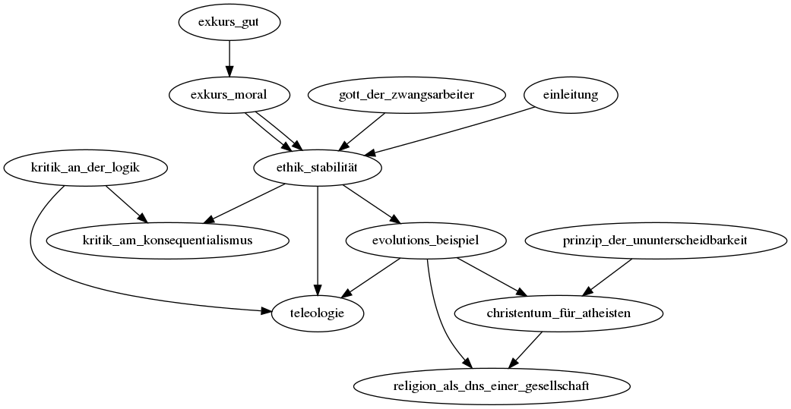

Da es mir schwierig erschein im Vornherein zu wissen, welchen Ablauf ein Buch hat, schreibe ich dieses in Form einer Webseite. Der Sinn darin ist, dass ich einfach einen Link zu einem neuen Gedanken beginnen kann, wenn es zu einem Thema passt. Ich kann dann im nachhinein eine zum Lesen möglichst angenehme Reihenfolge wählen. Einige Themen hängen voneinander ab, also muss man erst das eine Thema gelesen haben um das nächste völlig zu verstehen. Die Abhängigkeit habe ich in dem folgenden Graphen gezeigt.
Ich höre gerne philosophische und theologische Diskusionen und Podcasts. Eine Frage die dort immer wieder aufgetaucht ist, ist die des Seins und Sollens. Wie kann man aus Sein Sollen herleiten. Also wie kann ich entscheiden aus all dem was ist, was in Zukunft sein soll. Wie kann ich aus Materie Sinn herleiten? An dieser Frage scheiterten meist die Atheisten und es ist der kleine Triumpf der Theologen. Und natürlich bauen diese dann alles darauf auf.
Sam Harris, einer der bekanntesten Atheisten, begründet die Grundlage seiner Ethik: Stell dir das grösst mögliche Leid für so viele Menschen wie möglich vor. Wir können uns doch einigen, dass dies schlecht ist. Das Ziel ist als so weit wie möglich von dieser Position weg zu geraten. Doch woher nimmt er, dass dieses grösst mögliche Leid so schlecht ist? Wie weiss er das? Vorallem hat der einfach das Wort: Böse oder Schlecht mit Leid ersetzt. Das gibt keine zusätzliche Schlagkraft. Er sagt nur, dass schlechte Dinge schlecht sind. Warum aber etwas als schlecht zählt, geht aber nicht daraus hervor. Also aus meiner Sicht scheitert er genau daran. Aus der physikalischen Welt gut und böse extrahieren zu können. Er gibt das auch selbst zu. Ja er könne nicht aus Sein Sollen herleiten, aber aus einem Soll kann er ganz viele andere Solls herleiten. Wenn wir uns einigen, dass Leid so schlecht ist, dann können wir den ganzen Rest daraus herleiten.
Ich starte hier den Versuch, Gut und Böse aus der physikalischen Welt herzuleiten. Dadurch ergibt sich somit auch ein Sollen. Doch obwohl ich aus Sein Sollen herleiten werde ist meine Absicht nicht gegen Religion. Im Gegenteil diese Gedankengänge sind mein Versucht meinen wachsenden Zweifel an meiner sehr starren religiösen Hintergrund zu begegnen. Ich hielt eine mir lange erscheinende Zeit mehrere Sichtpunkte gleichzeitig die Widersprüchlich waren. (atheistische und religiöse) Ich hielt sie bewusst und mir graute davon eine der beiden abzulegen, denn sie beide bedeuteten mir die Welt. Die atheistische Ansicht war kurz gefasst: All diese Geschichten konnten so nicht passiert sein wie in der Bibel beschrieben und es gibt andere Erklärungen für die Entstehung der Bibel und der Wunder. Auch war mir wichtig, dass sich Dinge nicht widersprechen durften. Innerhalb meiner religiösen Gruppe wurden widersprüche oft mich billigen Floskeln abgetan. Meine religiöse Sicht gab mir Wert, Halt und eine inner Sicherheit, wenn ich zur Ruhe gekommen bin. Auch "sprachen" die Texte der Bibel oft zu mir. Ich hatte so zusagen eine persönliche Beziehung zu Gott und zur Schrift die von diesem Gott handelt. Ich war nicht bereit eine der beiden Ansichten aufzugeben. Doch zu wem habe ich eine Beziehung, wenn es Gott nicht gibt?
Was mich also rumtreibt sind die grossen Fragen der Philosophie. Ich glaube meine Ansicht schaft eine Basis wie man innerhalb einer Weltanschauung (Christentum, Atheismus) diskutieren kann und Gut und Böse unterscheiden. Aber, und das ist mir sehr wichtig, auch zwischen Weltanschauungen den Dialog führen kann. Den Dialog, den ich in meinem Kopf machte zwischen meinen zwei sich ahnscheinend ausschliessenden Ansichten, kann auch interpersonal gemacht werden.
Und um mehr über meine Vorschläge zu erfahren, kann man hier starten: Ethik der Stabilität